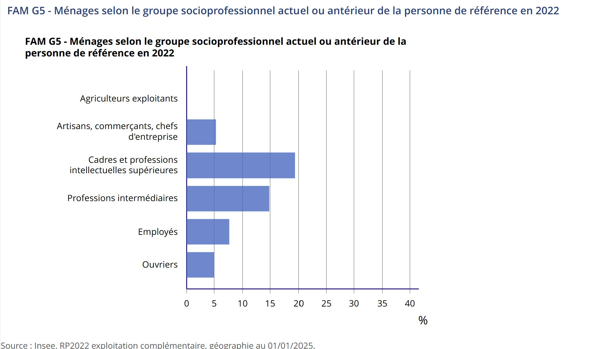
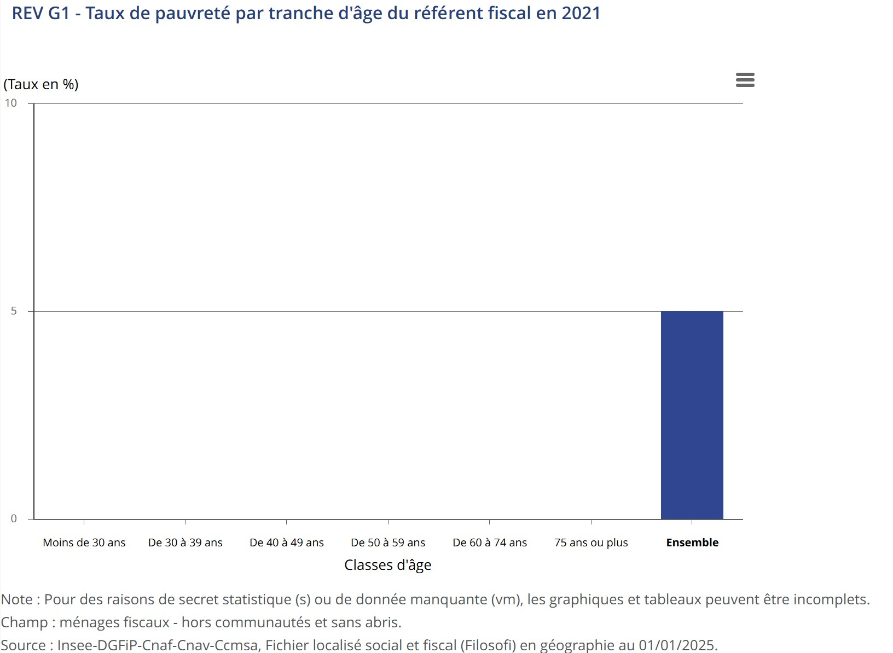
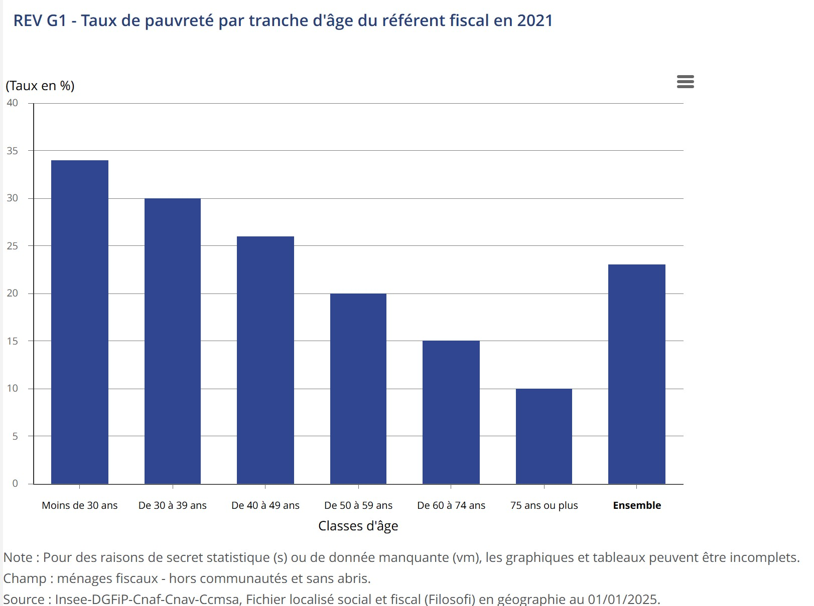
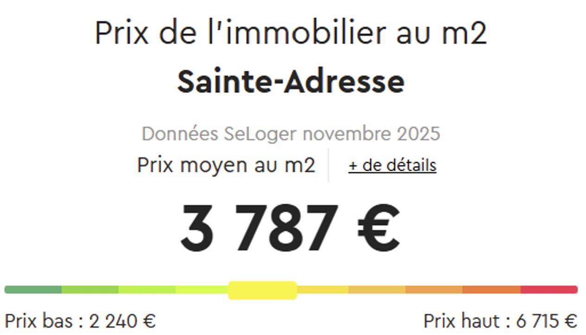
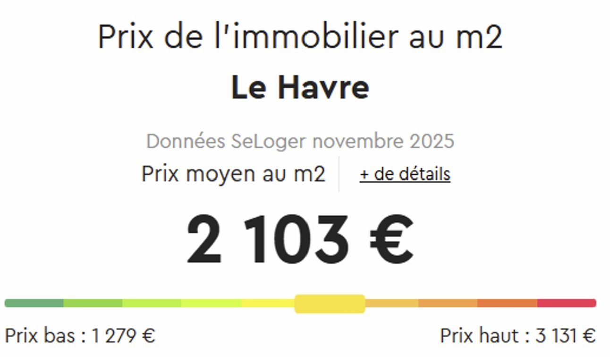
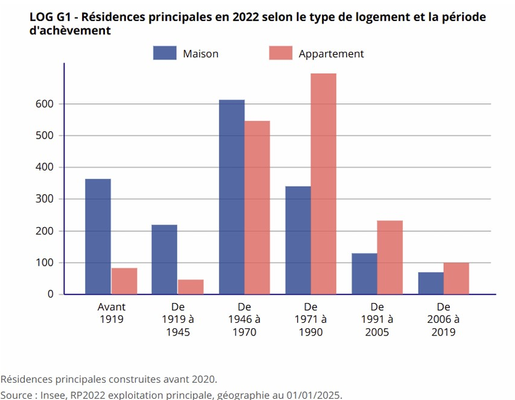
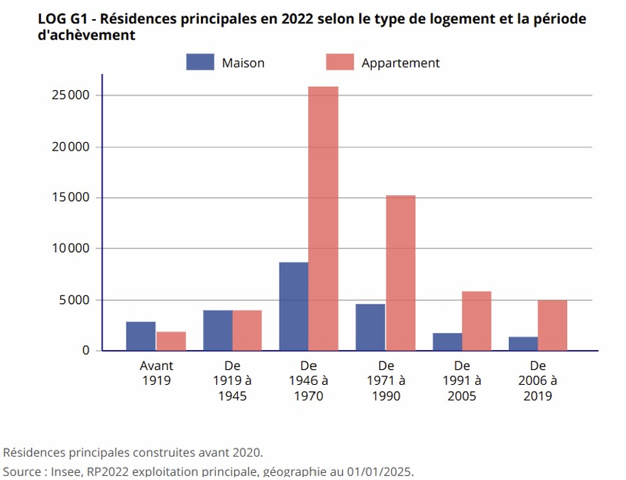
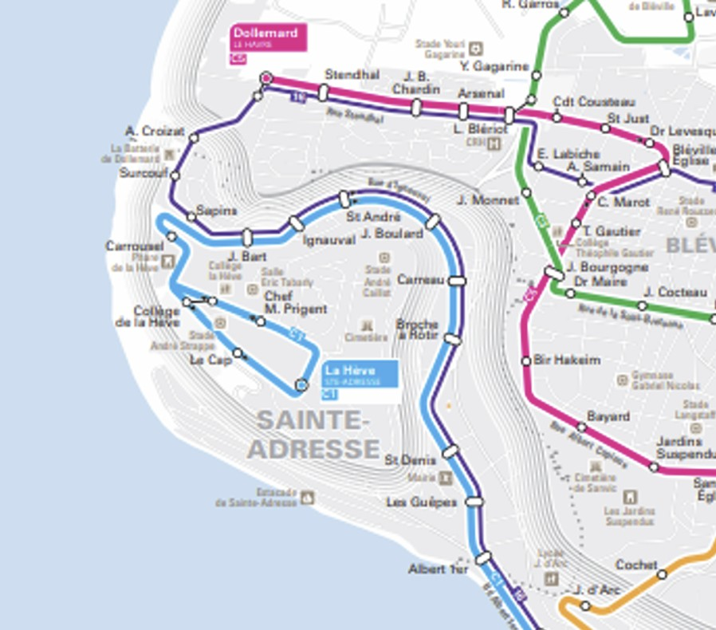

L'agglomération havraise est marquée par une scission très nette de son territoire entre la commune de Sainte-Adresse et la ville du Havre. Cette séparation désirée est entretenue par ses représentants politiques, mais aussi par ses habitants. En effet, malgré leur proximité et leur histoire entremêlée, Sainte-Adresse se différencie du Havre sur plusieurs aspects : de par son agencement spatial, son tissu socio-économique, sa démographie, mais aussi par le biais de sa politique.
Les spécificités géographiques de Sainte-Adresse
D'un point de vue spatial et géographique, on retrouve une séparation topographique naturelle de Sainte-Adresse du reste de l'agglomération havraise. Cet atout naturel vient réaffirmer de nouvelles frontières explicites et une isolation de la commune du reste de l'agglomération. Comme on peut le voir sur cette carte topographique, la majorité de la commune de Sainte-Adresse est située sur le plateau de la Hève, séparée du reste du Havre.
Source : Topographic-map.com, carte topographique Sainte-Adresse
Par ailleurs, comme cité précédemment, la grande majorité de la commune est située sur les hauteurs de falaise, ce qui lui permet d'être protégée de la montée du niveau des eaux en comparaison à la ville voisine du Havre, dont la grande partie du centre-ville est inondable. Cette protection naturelle permet à la commune de se sentir en sécurité et pérenne, ce qui a pour conséquence d'entraîner un renfermement sur elle-même et de ne pas chercher à s'étendre, ni à se protéger des aléas climatiques qui préoccupent peu les habitants après que nous les ayons interrogés, la priorité étant le maintien de leur cadre de vie calme et privilégié.
À cette topographie singulière, s'ajoute un atout de taille : Sainte-Adresse est la seule commune de la côte normande, de la ville de Calais jusqu'à celle de La Hague, à posséder une façade maritime orientée plein sud et sans vis-à-vis.
Source : Google Maps, capture d'écran côte normande
Ce cadre unique et privilégié de la côte normande offre un ensoleillement maximal et a permis l'aménagement du quartier de renom du "Nice Havrais", connu pour son climat doux et ensoleillé, rappelant la ville de Nice, connue pour être une des villes avec le plus d'ensoleillement à l'année. Ce quartier fait la renommée de la commune avec ses grandes villas au style varié, et l'ancien immeuble du "Nice Havrais" réalisé par Georges Dufayel qui fut le siège du gouvernement belge de 1914 à 1918.
Source : photographies personnelles - MUNIER Armand
Source : photographies personnelles - MUNIER Armand
Source : photographies personnelles - MUNIER Armand
Source : photographies personnelles - MUNIER Armand
Les spécificités socio-économiques de Sainte-Adresse
Au niveau socio-économique, Sainte-Adresse réaffirme encore sa scission vis-à-vis du reste de l'agglomération havraise avec la composition socioprofessionnelle de ses résidents en comparaison à la ville du Havre. Après plusieurs entretiens semi-directifs avec plusieurs habitants et après avoir étudié le dossier Insee de la commune, si l'on regarde le recensement des CSP des ménages de Sainte-Adresse, on recense 19,4 % des ménages qui sont des cadres et professions intellectuelles supérieures, là où Le Havre n'en recense que 8,4 %.
Sainte-Adresse
Source : Insee, dossier complet-Commune de Sainte-Adresse (76552)
Le Havre
Source : Insee, dossier complet-Commune du Havre (76351)
En comparaison, au Havre, les ménages ouvriers représentent 15,9 % des CSP par ménage contre 5 % à Sainte-Adresse. Cette inversion des représentations des CSP par ménage entre ces 2 villes révèle une mixité sociale défaillante au sein de la commune de Sainte-Adresse où les CSP comme les employés et les ouvriers sont sous-représentés.
À cette mixité sociale défaillante s'ajoutent d'autres inégalités entre ces communes limitrophes : le taux de pauvreté recensé au Havre est de 23 %, tandis qu'à Sainte-Adresse il n'est que de 5 %, soit presque 5 fois moins qu'au Havre. À nouveau, comme pour la répartition socioprofessionnelle, on remarque une forte disparité illustrant à nouveau une divergence importante entre Sainte-Adresse et le reste de l'agglomération havraise.
Sainte-Adresse
Source : Insee, dossier complet-Commune de Sainte-Adresse (76552)
Le Havre
Source : Insee, dossier complet-Commune du Havre (76351)
Les spécificités démographiques de Sainte-Adresse
Sur le plan démographique, la composition de la population de Sainte-Adresse se différencie de celle du Havre. En effet, la commune de Sainte-Adresse est touchée par le vieillissement général de sa population actuelle. D'après le recensement de 2022 produit par l'INSEE, 46,1 % de la population de Sainte-Adresse a plus de 60 ans, ce qui est considérable. Près de la moitié des résidents de la commune sont des personnes proches de la retraite ou retraitées. Au Havre, en comparaison, seulement 26,6 % de sa population a plus de 60 ans, c'est presque 2 fois moins qu'à Sainte-Adresse.
Source : données INSEE - Graphique MUNIER Armand
Le vieillissement de la population de Sainte-Adresse nous a tout de suite frappés lors de notre semaine de terrain, avant même que nous nous plongions dans les dossiers statistiques de l'INSEE. Nous avons pu observer lors de nos visites de terrain un nombre important d'infrastructures de santé orientées pour un public âgé : cabinet de soins infirmiers, nombreuses pharmacies, EHPAD, zone pour personnes à mobilité réduite sur les plages...
Source : photographies personnelles - MUNIER Armand
Source : photographies personnelles - MUNIER Armand
Source : photographies personnelles - MUNIER Armand

Source : photographies personnelles - MUNIER Armand
Source : données INSEE - Graphique MUNIER Armand
Les spécificités politiques de Sainte-Adresse
Sur le plan politique, encore une fois, la commune de Sainte-Adresse ne cherche pas à s'ouvrir ou à se rendre accessible. Il suffit de marcher le long de sa promenade du littoral pour s'en rendre compte : caméras de surveillance, panneaux d'affichage interdisant l'accès aux épis, les nuisances sonores et la promenade d'animaux même tenus en laisse. Cela réduit ainsi drastiquement le type d'usage potentiel de la promenade qui est pourtant mis en avant par les affiches à but "touristique" de la mairie.
Source : photographies personnelles - MUNIER Armand
Source : photographies personnelles - MUNIER Armand
Source : photographies personnelles - MUNIER Armand
Source : photographies personnelles - MUNIER Armand
Par ailleurs, la ville est dépourvue de bancs publics, rien n'incite les personnes à s'aventurer au sein de la commune.
Les spécificités immobilières de Sainte-Adresse
Sur le plan immobilier, la différence significative de prix par m² entre Sainte-Adresse et la ville du Havre peut illustrer une nouvelle fois une volonté d'entre-soi : il est d'environ 3800 euros à Sainte-Adresse contre 2100 euros au Havre, près du double.
Sainte-Adresse
Source : SeLoger.com, Prix m² Sainte-Adresse
Le Havre
Source : SeLoger.com, Prix m² Le Havre
Ainsi, il sert indirectement de barrière économique à la ville afin de choisir et de filtrer quelle catégorie de personnes peuvent s'installer au sein de la commune. De plus, nous n'avons pu observer aucune agence immobilière dans la ville, ce qui nous a été confirmé par un des acteurs rencontrés qui nous a expliqué que les maisons de Sainte-Adresse se vendaient entre réseaux de particuliers, encore une fois dans le but d'alimenter cet entre-soi.
En conséquence, la mobilité résidentielle de la commune est figée, accroissant encore plus l’ancienneté d’emménagement des ménages, composer en majorité de personnes âgées comme nous l’avons démontré précédemment. Sur le graphique ci-dessous nous pouvons constater qu’un pourcentage réduit de personne a emménagé a Sainte-Adresse en 2022 en comparaison au Havre, tandis que de la part de personne ayant emménagé depuis plus de 20 ans a Sainte-Adresse est largement supérieure a celle du Havre.
Source : données INSEE - Graphique MUNIER Armand
De plus, la typologie du bâti de la commune n'a elle aussi pas vocation à accueillir de nouvelles populations, le logement individuel, étant largement mis en avant historiquement par rapport au logement collectif.
Sainte-Adresse
Source : Insee, dossier complet-Commune de Sainte-Adresse (76552)
Le Havre
Source : Insee, dossier complet-Commune du Havre (76351)
Les spécificités de mobilité à Sainte-Adresse
Vis-à-vis des politiques de mobilités, Sainte-Adresse est en position de retrait vis-à-vis du réseau de mobilité collective et douce du Havre. On peut noter que l'actuelle desserte du tramway havrais n'a pas été étendue jusqu'à Sainte-Adresse, or au XXe siècle, il existait une ligne de tramway qui assurait la liaison entre les 2 communes le long du littoral. Il s'agit d'un choix politique pris par les représentants de Sainte-Adresse qui a l'air d'être approuvé par les populations que nous avons interrogées. Selon une personne interrogée sur le manque de mobilité au sein de la commune : "Le tramway ne serait pas un mode de transport familial mais, plutôt un mode de transport utilisé par les travailleurs", elle l'a donc décrit comme inadapté aux besoins de la commune.
Source : Le Havre patrimonial, images du Havre
Par conséquent, actuellement, seulement 1 ligne de bus circule jusqu'au cœur de la commune, la ligne (C1), une autre ligne (C16) complémentaire emprunte aussi la rue d'Ignauval, mais cette dernière se dirige rapidement vers les hauteurs nord de Sainte-Adresse où elle rejoint le quartier de Bléville au Havre.
Plan bus LIA
Source : Plan bus LIA
Par ailleurs, l'application de mobilité douce de vélos et trottinettes électriques en libre-service "Voi" de l'agglomération havraise n'a pas été étendue jusqu'à Sainte-Adresse, afin de garder la tranquillité de la commune, selon les habitants interrogés.
Source : Plan réseaux Voi

Source : Plan réseaux Voi
En conséquence de la position de retrait de la commune à se joindre au réseau de mobilité de l'agglomération havraise, la voiture occupe une place importante dans la ville, la circulation y est extrêmement dense aux heures de pointe.
Source : photographie personnelles - MUNIER Armand
Source : photographie personnelles - MUNIER Armand
Encore une fois, Sainte-Adresse se distingue du Havre avec une part de ménages qui possèdent au moins 2 voitures qui sont deux fois plus élevées qu'au Havre. Cela est dû, comme nous l'avons mentionné précédemment, à une isolation géographique et à une insuffisance de transport au sein de la commune. Par conséquent, la plupart des déplacements effectués par les résidents de la commune se réalisent en voiture.
Source : données INSEE - Graphique MUNIER Armand
Source : photographie personnelles - MUNIER Armand
Conclusion
Après cette semaine de terrain et le travail préparatoire nécessaire à la réalisation de notre blog, le phénomène d'entre-soi de Sainte-Adresse s'est révélé à nous de manière évidente. Toutefois, les choix politiques qui conduisent à l'isolement volontaire de Sainte-Adresse ne sont pas sans conséquence : sa population vieillit et ne se renouvelle pas, son solde naturel est faible et insuffisant, sa mobilité résidentielle est figée par un réseau de vente entre particuliers et des prix trop élevés.
Source : données INSEE - Graphique MUNIER Armand
Source : données INSEE - Graphique MUNIER Armand
Comme nous pouvons le voir sur les graphiques ci-dessus, la population de la commune vieillit massivement et ne cesse de diminuer sans se renouveler, ce qui finira par l'obliger à revoir ses orientations politiques en matière d'aménagement et de gestion de sa commune.
Sources :
- Carte topographique Sainte-Adresse, altitude, relief. (s. d.). Cartes Topographiques.
- Dossier complet − Commune de Sainte-Adresse (76552) | Insee. (s. d.).
- Dossier complet − Commune du Havre (76351) | Insee. (s. d.).
- Front de mer, Le Havre : vue sur Sainte-Adresse avec tramway. (2010, 27 décembre). LE HAVRE PATRIMONIAL.
- OpenStreetMap & Transports Lia. (s. d.). Plan général 2025 MAJ novembre.
- Prix m2 immobilier Le Havre (76) en décembre 2025 | SeLoger. (2025, 1 novembre).
- Prix m2 immobilier Sainte-Adresse (76) en décembre 2025 | SeLoger. (2025, 1 novembre).